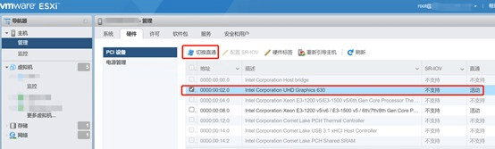
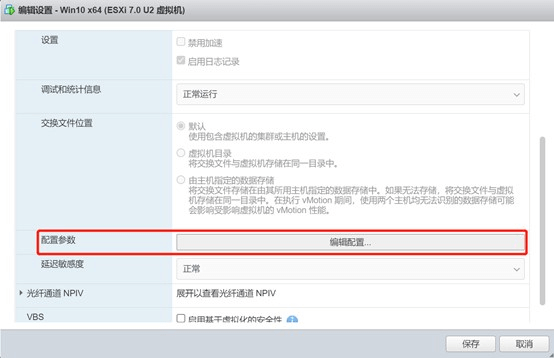
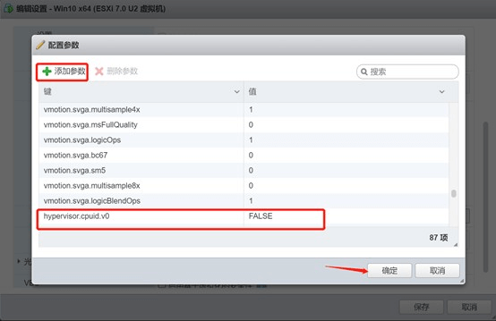

esxi 配置 GPU 显卡直通给虚拟机使用
最近在我家里的 Ubuntu 上安装了 jellyfin 媒体中心，发现局域网内播放高码率视频卡顿严重，原因是默认设置的是软解码导致 cpu 负载很高，在设置里可以开启硬件解码，但是配置后发现播放视频会报错：
客户端配置文件存在问题，服务器未发送兼容的媒体格式
看后台 log 日志，发现在 ffmpeg 解码时有如下报错信息：
[AVHWDeviceContext @ 0x558b80b15a80] libva: vaGetDriverNameByIndex() failed with unknown libva error, driver_name = (null)
[AVHWDeviceContext @ 0x558b80b15a80] Failed to initialise VAAPI connection: -1 (unknown libva error).
Device creation failed: -5.
Failed to set value 'vaapi=va:/dev/dri/renderD128' for option 'init_hw_device': Input/output error
Error parsing global options: Input/output error查找原因
测试在 docker-compose.yml 中开启全部权限，配置 root PUID PGID，以及映射 GPU 设备给 docker：
environment:
- PUID=0
- PGID=0
devices:
- /dev/dri:/dev/dri
privileged: true重启容器后依然会报错。
报错信息显示无法读取 gpu 驱动名称，这应该不是 docker 的问题，在主机上测试 vainfo 也会报错：
$ vainfo
error: can't connect to X server!
libva info: VA-API version 1.14.0
libva error: vaGetDriverNameByIndex() failed with unknown libva error, driver_name = (null)
vaInitialize failed with error code -1 (unknown libva error),exit报错内容和 jellyfin 的日志类似，测试添加环境变量强制指定驱动名称：
export LIBVA_DRIVER_NAME=iHD再次 vainfo：
$ vainfo
error: can't connect to X server!
libva info: VA-API version 1.14.0
libva info: User environment variable requested driver 'iHD'
libva info: Trying to open /usr/local/lib/dri/iHD_drv_video.so
libva info: Found init function __vaDriverInit_1_14
DRM_IOCTL_I915_GEM_APERTURE failed: Invalid argument
Assuming 131072kB available aperture size.
May lead to reduced performance or incorrect rendering.
get chip id failed: -1 [22]
param: 4, val: 0
libva error: /usr/local/lib/dri/iHD_drv_video.so init failed
libva info: va_openDriver() returns 18
vaInitialize failed with error code 18 (invalid parameter),exit现在看来应该是其他问题了，经过查询，esxi 默认是分配了虚拟显卡给虚拟机，导致虚拟机无法调用 gpu 底层的一些功能，从而导致 ffmpeg 等工具硬件解码失效。处理办法就是在 esxi 上配置显卡直通，然后添加给对应虚拟机直接调用硬件资源。
经过下面的尝试，我还是设置显卡直通，导致最终无法实现硬件解码。可能是主板上有限制吧。
显卡直通
显卡直通应该就可以解决上面的问题，但是当我直接进入 esxi 控制台设备管理中却找不到 GPU 设备，需要进入 esxi ssh 查看是否有 GPU 设备类似于：UHD Graphics 630。
ssh 登录 esxi 后台，首先查看是否有 GPU相关设备信息，终端命令行执行：
lspci -v
找到显卡设备ID，如图所示：
8086:9bc8 就是显卡设备 ID，其中 8086 是供应商 ID，也就是代表 Intel，9bc8 就是这块显卡的设备硬件 ID。
然后关闭 esxi 对 GPU 的调用，然后手动添加 pci 设备信息，然后就可以在控制台配置直通了。
通过 ssh 登录 esxi，输入如下命令取消显卡占用，注意取消后就不能连接显示器访问 esxi 后台图形界面了：
esxcli system settings kernel set -s vga -v FALSE后期如果需要取消显卡直通或者登录图形后台需要重新开启显卡调用：
esxcli system settings kernel set -s vga -v TRUE然后修改 passthru.map 添加 PCIE 设备 ID 信息。
修改/etc/vmware/passthru.map 文件，根据上面找到的设备 ID 信息，在最底部增加以下信息：
完成后保存并退出，然后重启 esxi。
重启完成后就可以从控制台 pci 设备中找到显卡了：

配置好直通后，给对应虚拟机配置显卡。
虚拟机配置
首先编辑虚拟机，CPU虚拟化这三个选项全部取消，未取消开启虚拟机会报错：由于硬件或软件支持不可用,因此无法为 0:2.0 注册设备 pciPassthru0：
内存勾选预留所有客户机内存（全部锁定）选项，不勾选启动虚拟机会报错：
最后添加显卡：
然后配置虚拟机自定义参数：
进入虚拟机选项 → 高级 → 配置参数 → 编辑配置添加以下参数：
| 键 | 值 |
| hypervisor.cpuid.v0 | FALSE |
此参数的作用：不让操作系统识别是在虚拟机环境运行，一般直通独立显卡需要这样设置，核显可忽略，但设置也无妨。
如下图所示：


由于虚拟机默认有一个虚拟显卡，我们又添加了一个直通显卡，现在就有了两个显卡，但我们只想要直通的显卡工作，可以在配置参数里添加一行:
| 键 | 值 |
| svga.present | FALSE |
这样操作后，我们开启虚拟机后再 /dev/dri 目录下就只会有一个 renderD128：
ls -l /dev/dri/
total 0
crw-rw---- 1 root video 226, 0 Oct 23 20:41 card0
crw-rw---- 1 root video 226, 128 Oct 23 20:41 renderD128查看 pci 设备信息：
<> sudo lspci -v -s 04:00.0
04:00.0 VGA compatible controller: Intel Corporation HD Graphics 530 (rev 06) (prog-if 00 [VGA controller])
Subsystem: Hewlett-Packard Company Device 82bf
Physical Slot: 161
Flags: bus master, fast devsel, latency 64, IRQ 67
Memory at fc000000 (64-bit, non-prefetchable) [size=16M]
Memory at d0000000 (64-bit, prefetchable) [size=256M]
I/O ports at 7000 [size=64]
Expansion ROM at <unassigned> [disabled]
Capabilities: [40] Vendor Specific Information: Len=0c <?>
Capabilities: [70] Express Endpoint, MSI 00
Capabilities: [ac] MSI: Enable+ Count=1/1 Maskable- 64bit-
Capabilities: [d0] Power Management version 2
Capabilities: [100] Process Address Space ID (PASID)
Capabilities: [200] Address Translation Service (ATS)
Capabilities: [300] Page Request Interface (PRI)
Kernel driver in use: i915
Kernel modules: i915这样显卡就直接直通给了虚拟机，注意这样配置后包括 esxi 本身和其他虚拟机就没有显卡可用了，导致没有图形界面。
参考链接
ESXI 7.02 Intel 核心显卡直通开启3D加速
ESXi 6.5 Passthrough Video Card/GPU to Plex VM
HW Transcoding - VAAPI - Intel not working
Deploying Hardware-Accelerated Graphics with VMware Horizon
Esxi 6.7核显直通问题求教各位恩山大神
Name: UHD Graphics 630
标签：无